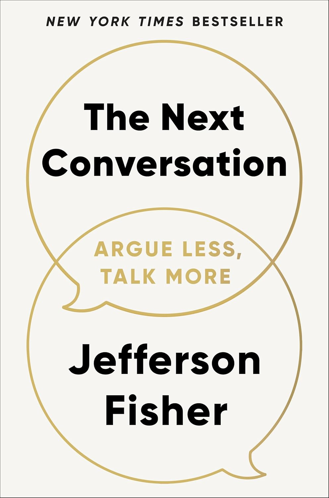

"The Next Conversation: Argue Less, Talk More"
- Read on 2025-10-11
- Rating: ️️️️️
- Format: 🎧 (6 hours 35 minutes)
I really liked this book. Jefferson Fisher gives pointed examples and advice on how to navigate conversations - both with high emotions and not. His advice seems manageable and sensible. I have multiple teenagers in my home, and know all too well my shortcomings as a parent. Throughout the book I wanted others in my home to be able to hear Fisher's input and ideas - both for our own conversations and their conversations with others as they learn to navigate the wider world. I'd happily revisit this book. (I read this for another work book club - but don't let that slow you down.)